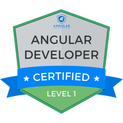
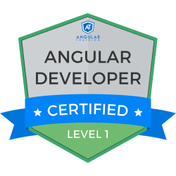

Willkommen bei Tomasi Developing
Ursprünglich begann meine berufliche Laufbahn als Koch, doch meine Neugierde und Faszination für die Welt der Technologie führten mich im Jahr 2018 dazu, eine Ausbildung zum Applikationsentwickler mit EFZ zu absolvieren.
Seitdem bin ich in diesem spannenden Bereich tätig und habe mich kontinuierlich weiterentwickelt.
Ich verfüge über umfangreiche Kenntnisse in diesen Technologien und habe in ihnen zahlreiche erfolgreiche Projekte umgesetzt.
Mit meinen fundierten Fähigkeiten in C# kann ich leistungsstarke Anwendungen entwickeln, die den Bedürfnissen meiner Kunden gerecht werden.
Ich bin vertraut mit HTML 5 und CSS 3, was es mir ermöglicht, ansprechende und benutzerfreundliche Webseiten zu gestalten. Zudem habe ich umfangreiche Kenntnisse in Azure, einer Cloud-Plattform, die Unternehmen dabei unterstützt, ihre Anwendungen sicher und skalierbar bereitzustellen.
Des Weiteren beherrsche ich TypeScript und JavaScript, was es mir ermöglicht, dynamische und interaktive Funktionen in Webanwendungen zu implementieren.
Ich arbeite gerne im Team und schätze den Austausch mit anderen Experten, um gemeinsam großartige Ergebnisse zu erzielen.
Einige Werkzeuge, die ich benutzt und gelernt habe
 
